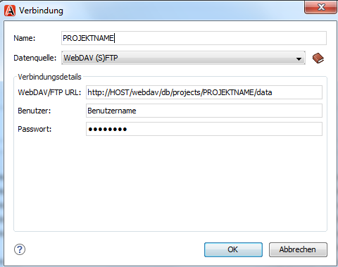
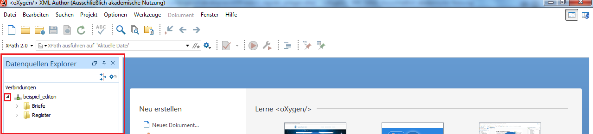

Sie konfigurieren die Verbindung für den Lese- und Schreibzugriff von der
Editionsumgebung auf die XML-Dateien. Die WebDAV-Verbindung verhindert Schreibkonflikte
zwischen verschiedenen Benutzer/innen.
-
Wählen Sie im Oxygen XML Editor das Menü aus.
-
Wählen Sie in der linken Spalte des nun geöffneten Einstellungen Fensters den Eintrag Datenquellen aus.
-
Klicken Sie in der unteren Hälfte (Verbindungen) auf den
+ Button, um eine neue Verbindung zu erstellen.
-
Füllen Sie die Angaben im nun geöffneten Verbindung
Fenster aus.

- Name: Name dieser Verbindung, z.B.
meineEdition. Dient Ihnen zur Unterscheidung
dieser Verbindung von anderen Datenbankverbindungen, die Sie in Oxygen
definiert haben. Muss nicht identisch mit dem Projektnamen in der
eXist-db sein.
- Datenquelle: WebDAV
(S)FTP
- WebDAV: Pfad zu Ihren Projektdaten in Ihrer
eXist-Instanz, nach dem Muster:
http://HOST:PORT/webdav/db/projects/PROJEKT/data.
Zum Beispiel:
https://meinInstitut.de/ediarum/webdav/db/projects/meineEdition/datahttps://xmledit.bbaw.de/ediarum/webdav/db/projects/meineEdition/data
- Benutzer, Passwort:
Angaben des Nutzeraccounts, den Sie in der ediarum.DB-App in
eXist-db angelegt haben ().
-
Klicken Sie auf OK.
-
Kontrollieren Sie die Datenbankanbindung:
-
Wählen Sie das Menü aus.
Die hergestellte Verbindung wird im Explorer angezeigt (hier:
meineEdition).
-
Klicken Sie den Pfeil neben der Verbindung an, um die Ordnerstruktur zu
öffnen.

Die Struktur ist identisch mit der Ordnerstruktur, die in
eXist-db auf der Übersichtsseite Ihres Projekts
angezeigt wird (ediarum.DB-App: ). Sie haben Zugriff auf die Ordner
Briefe und
Register.
Wenn sich die Ordner nicht aufklappen lassen und eine Fehlermeldung erscheint:
- Kontrollieren Sie die Richtigkeit Ihrer Angaben im
Verbindung-Fenster, insbesondere:
- WebDAV: Ist der Pfad bis zu der Ebene
.../data eingetragen?
- Benutzer, Passwort: Sind
die Angaben identisch mit den Angaben in der
ediarum App in eXist-db?
- Verfügbarkeit: Sie können die Richtigkeit und Verfügbarkeit der
Datenverbindung der Angaben auch dadurch prüfen, dass Sie versuchen den
entsprechenden Pfad in Ihrem Browser öffnen (unter Eingabe von Benutzer
und Passwort). Ihr Browser sollte Ihnen dann ein XML-Output mit den
Ordnerangaben anzeigen.
- Machen Sie im Datenquellen Explorer einen Rechtsklick auf Ihre
Edition und klicken Sie im Kontextmenü Erneut laden an.